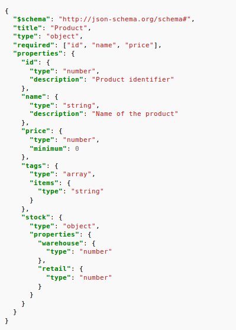

API Workshop
APIs allow our programs to easily get information from the Internet, meaning that we can get any kind of information we'd like and use it in our programs. Let's see how the work and how we can use them to make our programs better.
Client-Server Architecture

The Internet works on a client server model, where anyone who tries to access a webpage makes an HTTP request to a computer across the Internet. That computer is called a server and provides a response in the form of some data. This data is often an HTML page.
Making Requests
HTML pages are great for people to read. We can apply all sorts of fancy animations and colors to make our webpages easy to read and appealing for people to look at.
Your computer, though, doesn't need all that extra information that you do. The computer just needs the data. To accomplish that, many sites also send their data in JSON format if requested.
This format is standardized, so someone already wrote something to convert to and from this format in many different languages.
The way the page can ask for data is by assembling our own HTTP request. Here's how to do it in JavaScript:
var req = new XMLHttpRequest();
req.open("GET", "example.json");
req.overrideMimeType("application/json");
req.send();
// To look at the data:
req.responseText
To prevent you from sending a million requests and taking the site down, many APIs make sure that any developers who want to access it get a key. A key is just a random string of characters assigned to you that you send in your URL every time. Most of these APIs make the first few thousand requests per day free for testing purposes. Once you move past that limit, they charge per request.
Many of these APIs are quite complicated, so it's good to start on one that's much easier to work with. PokeAPI is a good one because what it's sending is pretty easily understandable.
A good example of what you can do with these requests is the Google Maps API. This one's a little more complicated and uses a key to authenticate your access.
Try it Out
The best way to get familiar with making requests is to try it.
Many scripting languages have the capability of sending HTTP requests, and a quick Google search will find most of the information you need to know. For this example, though, we are using JavaScript because everyone can run it in their browser.